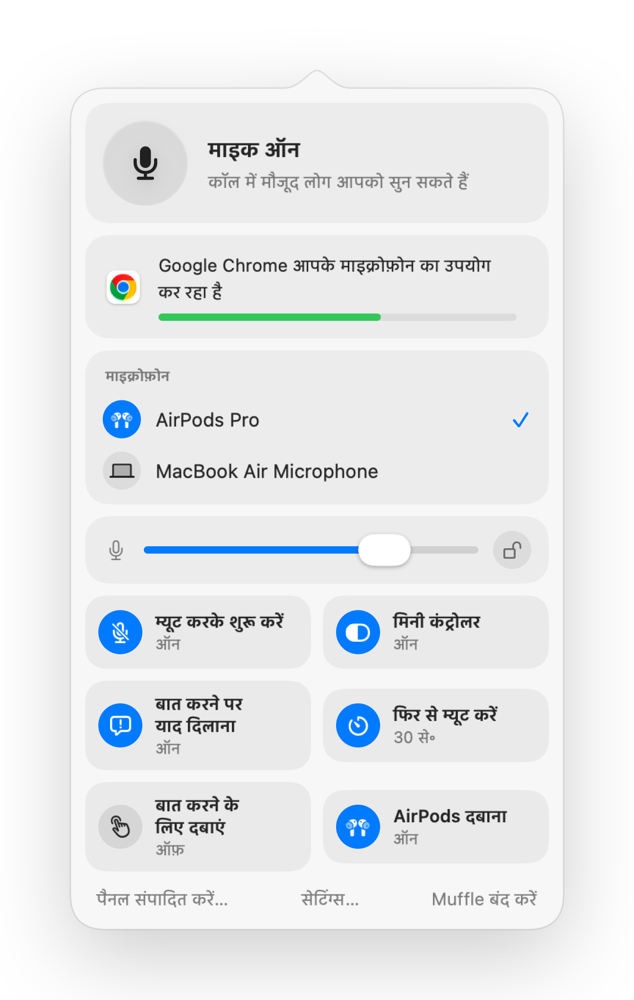

Mac पर किसी भी ब्राउज़र टैब में कॉल म्यूट कैसे करें
आजकल ज़्यादातर कॉल ब्राउज़र में होती हैं: Google Meet, वेब पर Teams, SoWork और Gather जैसे वर्चुअल ऑफिस, Whereby और Jitsi। इनमें से हर एक का अपना म्यूट बटन और शॉर्टकट है, और वे सिर्फ तभी काम करते हैं जब वह टैब स्क्रीन के सामने हो।
Mac पर ब्राउज़र AirPods के म्यूट प्रेस को भी अनदेखा कर देते हैं। Muffle इस प्रेस या एक ग्लोबल शॉर्टकट को स्वीकार करता है, और एक ही बार में हर टैब के माइक्रोफ़ोन को म्यूट कर देता है।
कोई भी वेब कॉल म्यूट करें
- 1
Muffle इंस्टॉल करें और माइक्रोफ़ोन तक पहुँच की अनुमति दें।
- 2
किसी भी ब्राउज़र टैब में अपनी कॉल खोलें।
- 3
किसी भी ऐप या टैब से म्यूट करने के लिए अपने AirPods का स्टेम या Control-Option-M दबाएं।
- 4
मेनू बार आइकन पर ध्यान दें: लाल रंग का मतलब है माइक बंद है।

- वर्चुअल ऑफिस घंटों तक आपका माइक खुला रखते हैं। अपनी स्थिति हमेशा देखने के लिए फ्लोटिंग मिनी कंट्रोलर चालू करें।
- “आप म्यूट हैं” रिमाइंडर आपको बताता है जब आप म्यूट रहते हुए बोलना शुरू करते हैं।
अक्सर पूछे जाने वाले सवाल
Chrome में AirPods दबाना काम क्यों नहीं करता?
Chrome वेब पेजों के लिए macOS के AirPods म्यूट जेस्चर को सपोर्ट नहीं करता। इसके बजाय Muffle उस दबाव को प्राप्त करता है और खुद माइक को म्यूट कर देता है।
क्या यह SoWork और Gather में काम करता है?
हाँ। जब Muffle माइक बंद करता है, तो आपका माइक्रोफ़ोन इस्तेमाल करने वाली हर साइट म्यूट हो जाती है।